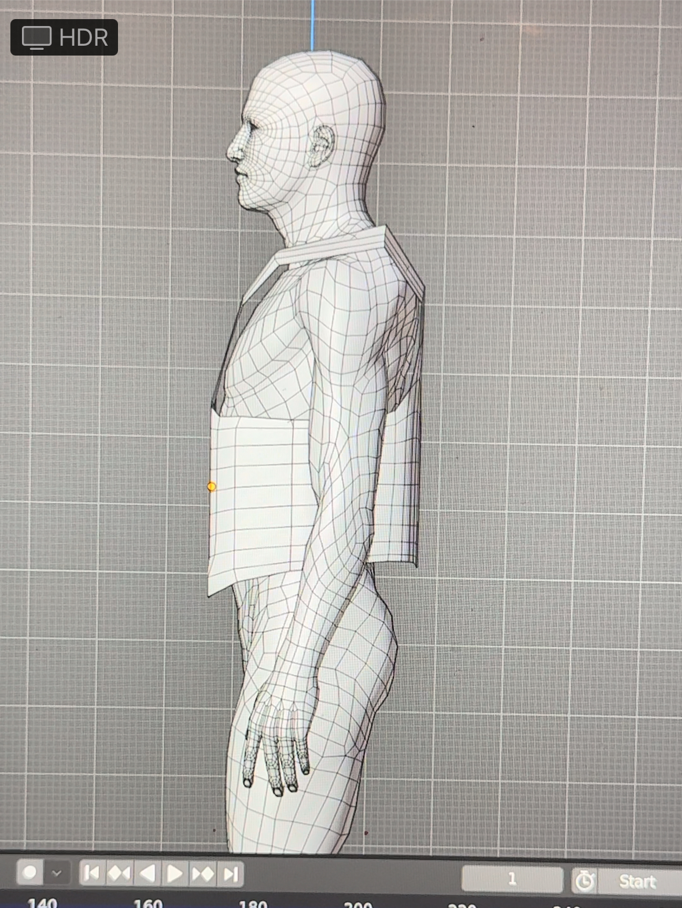
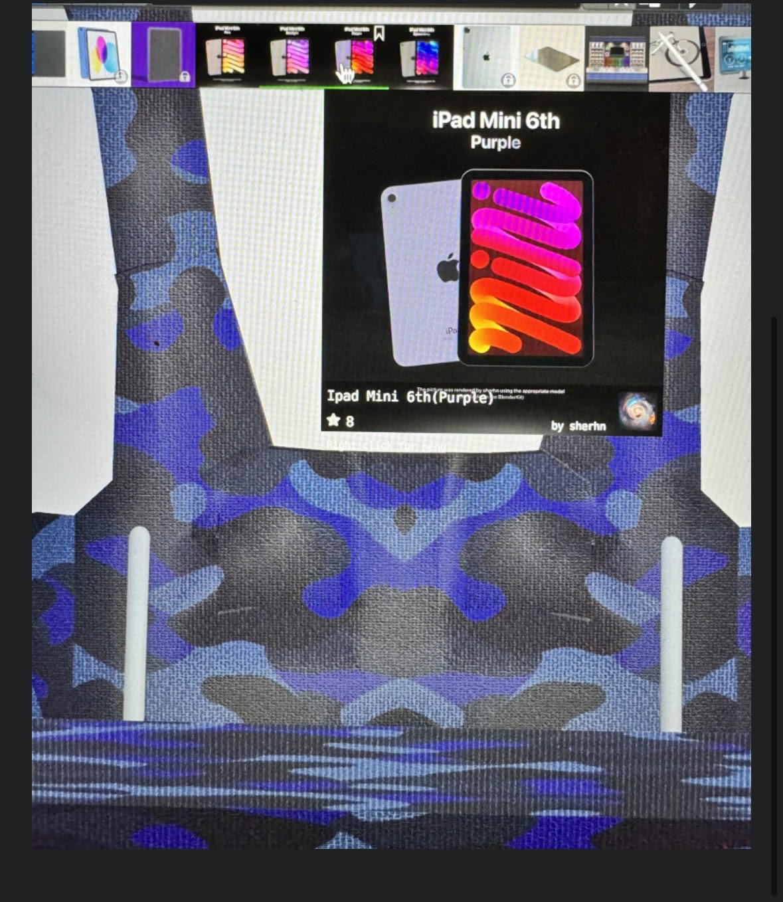
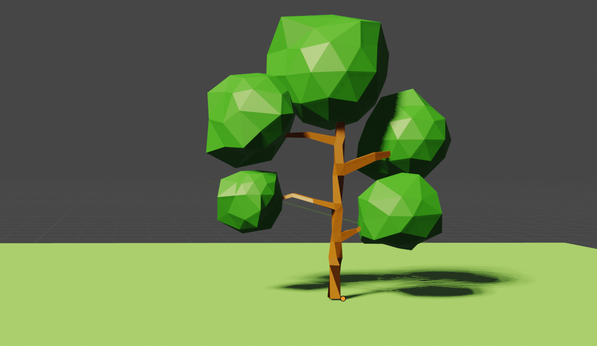
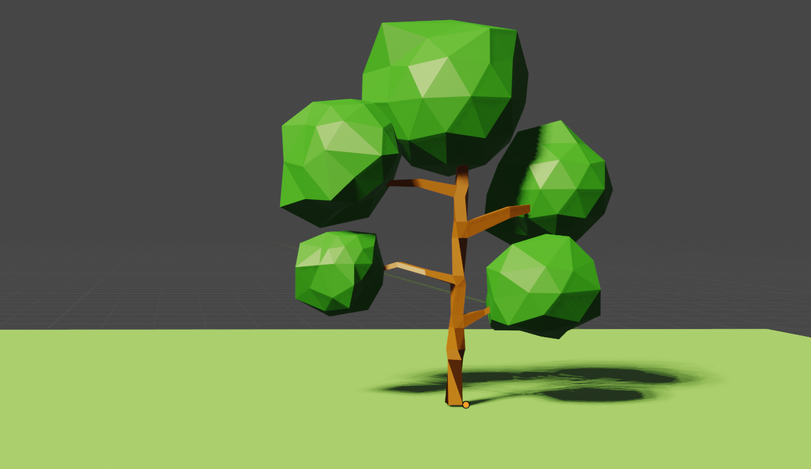
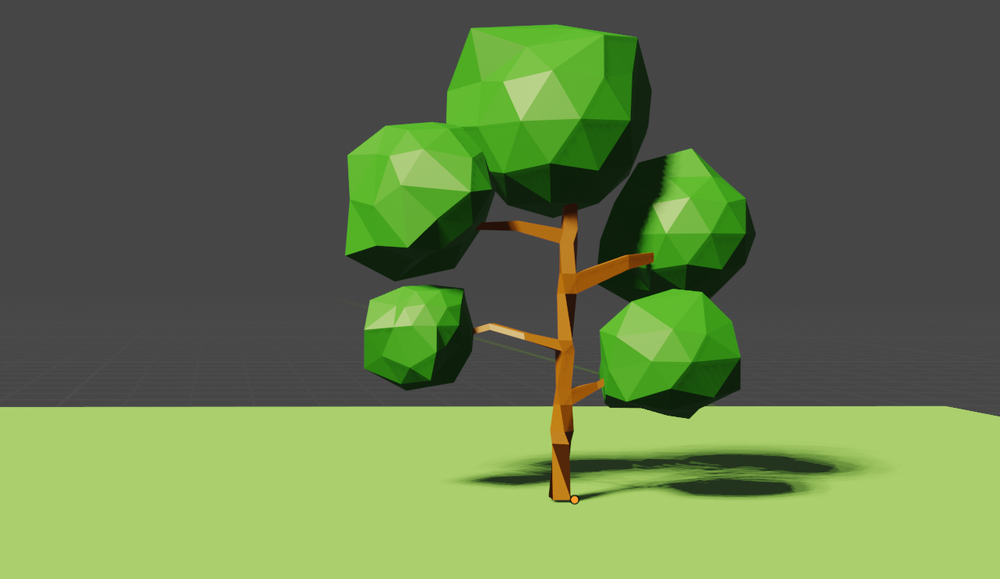

This is definitely diffcult for me. I probably can not produce 6 differemy iteriations, but I will talk about my process of getting from point A to point B.
First, I google creating shape movement. I found code that had circles moving around a rectangle
I played with the color of the circles.
Then, I applied with the rectangle size
Lastly, I found code to make the color to change at random.
p5.js is definitely a challenge. I do not get conversational math lol. However, I found a tutorial on creating patterns. I was slowly understanding the fundamentals like color and shape, but I honestly did not understand how the "loop" was created.
With this tutorial, I played with the colors, stroke width, and sizes of the different shapes.I did this by editing the data for the squares. I played with the stroke on the line but kept it the same.
I think that I was looking for a code called "loop", so I specifically search for a tutorial called patterns with loops. He explaiedn the logic behind loops through the modulo operator. Using the explain of dividing 6/3 =2 vs. 6/3 =1, I understand how to create the patterns. He also wenr into conditions which was harder, but at least I am understanding the conversational math now lol
Protyping with Blender
Learning Blender in three weeks definitely presented its challenges. However, the process taught me how to observe my product in the environment and include the experience within my prototype. My first challenge was designing a physical experience associated with my FEMA project.
At first, I was looking at buildings and abandon houses to showcase the situational awareness ascept. However, I am an absolute beginner to Blender, so my professor pushed me to design a physical product to assocate the FEMA worker while they are on the field. I was inspired by designs of vest with large pouch, so I decided to design a vest that allowed the FEMA worker to carry his iPAD while multitasking and being hands free whem needed
First, I explored tutorials to help me create the vest. For the most part, it was easy to follow; using the physics tool to sew the vest presented diffculty becuase it is a lot of physics element that I have not studied in probably twenty years. With the time constraint, I pivot to focus on the pouch component.
My professor worked me through a low fidelty on a way to design it. First, I used the cube to build out the pouch, using extude (E), sizing (S), and rotate (R). Then, I measured it to the vest.econdly, I design a rope-like structure to controll the flap of the vest.

I downloaded the ipad from blenerkit and added it inside the pouch. All of this took about a day and a half to two days. Once I was satisfied with the pouch design. I went pack to play with the vest. I could not get the sewing feature in the physics component to create a former fiting vest, so I started to manipulate it using the perspective tool.

Once I was satisfied, I began to explore the materials. I was looking for a thick police officer vest material, but I could not find it. I played with the army camo fabric. FEMA workers primarily wear blue so I created a blue monochromatic camo.
For the controller, I followed Apple's asthetic, using a black rubber material, and I added rope-like material. I went back to thickness the vest using the extude (E) option.
I tried to add my designs of the FEMA dashboard into the prototype but my computer continuously shutdown. I will add it to the blog once my laptop always me too!
Learning Blender
Since I am a novice to Blender, I decided to do three tutorials: (1) redoing the tree from class, (2) my attempt to design a cup, and (3) design a cup from another tutorial because the first one came out horrible.

Next, I attempted to design a cup from a tutorial on Youtube. I failed at using the Bevel tool because I wanted to improvise on the stem. Also, my finish was not smooth. I probably should have use more of the loop cut to smooth out the cup.
Again, I tried to design a cup again using another tutorial. This time is was a success. I did not add because it was complex to follow. I was able to easily follow the Modifier tool and started to understand the differences between edges and faces. Trying to freestyle my design, the cup came out a lil crooked.
From this exercise, I am learning that repetition creates perfection.
Excerpts from What do Prototypes Prototype & Programming Design Systems
Furthermore, digital products often have temporal logic where a linear narrative is replaced by a set of complex states and transitions. All in all, digital products all share a common trait: They are created with programming languages.
-Programming Design System
However, there is a century-long bond between the field of design and new advances in technology, and if graphic designers do not become fluent in this new digital reality, they will become irrelevant.
-Programming Design System
What is significant is not what media or tools were are used to create them,but how they are used by a designer to explore or demonstrate some aspect of the future artifact.
-What do Prototypes Prototype?
Many graphic design schools have resorted to teaching a waterfall philosophy where students are positioned to think of themselves as creatives who come up with ideas for others to build. After all, this is easier than adopting a whole new set of processes. However, the fundamental problem with this approach is that static design tools like Illustrator and Sketch fail at prototyping digital systems.
-Programming Design System
To design well, designers must be willing to use different tools for different prototyping tasks; and to team up with other people with complementary skills.
-What do Prototypes Prototype?
Define “prototype” broadly. Efficient prototypes produce answers to their designers’ most important questions in the least amount of time...We define a prototype as any representation of a design idea—regardless of medium; and designers as the people whocreate them—regardless of their job titles.


 
